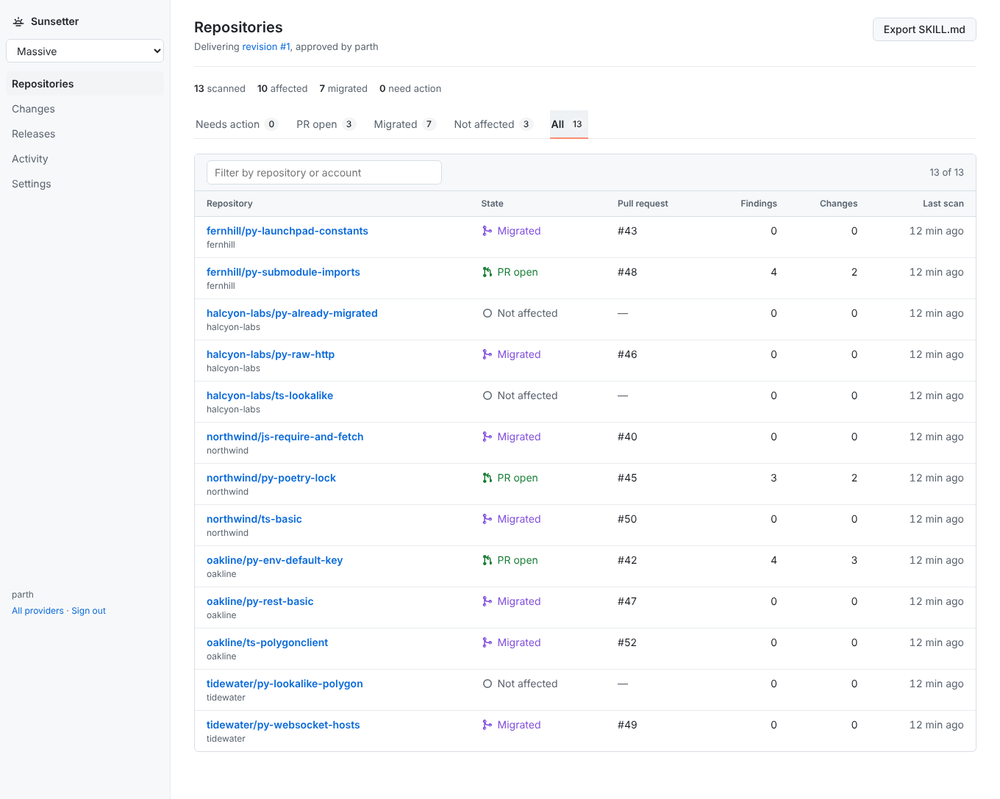
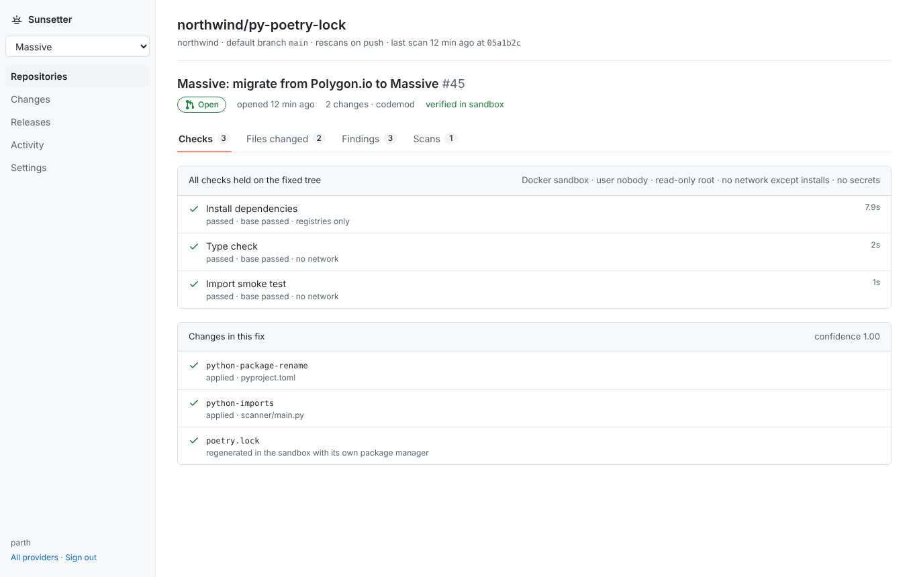
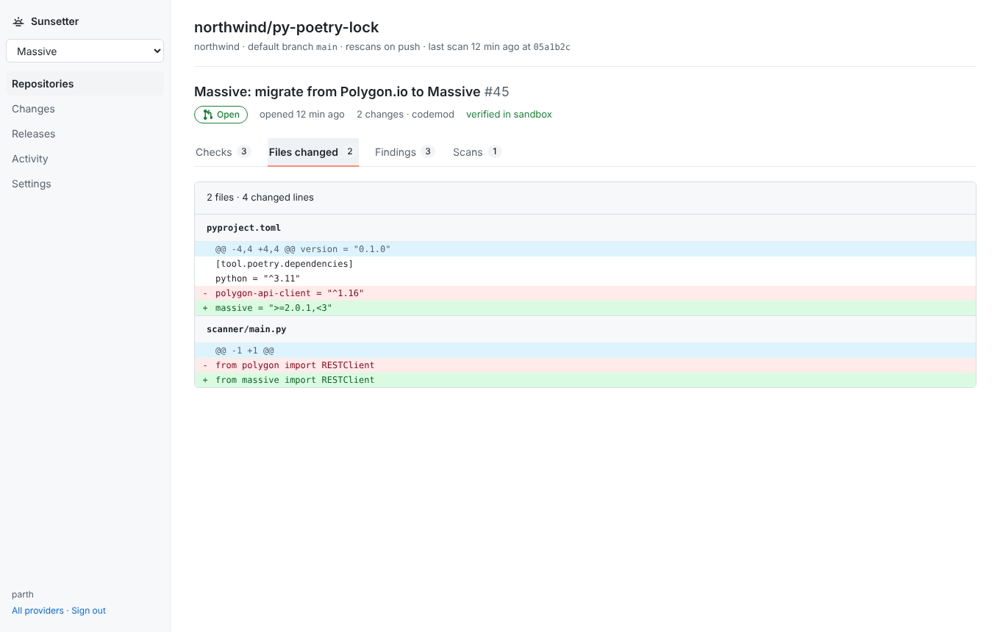
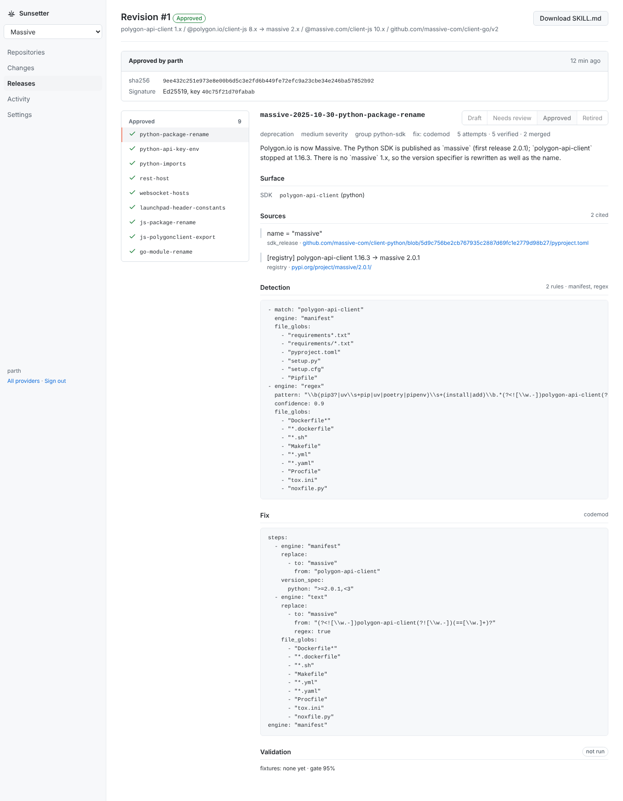

API migrations, shipped as verified pull requests.
When an API provider ships a breaking change, most customers don't migrate until something breaks. Sunsetter lets the provider fix it for them: it finds the affected code in customer repositories, applies the provider's approved fix, checks it in a sandbox, and opens a small pull request the customer just reviews and merges.
How it works
The provider stays in control. Every rule cites the provider's own source, and nothing reaches a customer until the provider signs it.
Detect the change
Diff the provider's OpenAPI spec, SDK surface and changelog between releases into a draft Change Manifest, with a source quote for every change.
Approve and sign
The provider reviews each rule in a dashboard, tests it on example code (≥95% precision required), and signs the manifest.
Fix and verify
In each customer repo: find usages, apply the approved fix, then install, type-check and test the code before and after, in an isolated sandbox.
Deliver
A GitHub App opens a small PR with the reason and the provider's quote. Anything not verified opens as a draft that says exactly what's left.
Results on real repositories
We ran the full pipeline locally on eight public repositories nobody on our side wrote: four that use Polygon.io's SDK (now Massive), and Stripe's own sample apps in five languages, plus Vercel's Stripe starter. No pull requests were opened.
The 4 caught breakages are real SDK changes outside the release we encoded: an npm peer-dependency conflict, and three
removals from earlier Stripe releases (retrieveUpcoming, current_period_* on subscriptions, Go's usagerecord).
“Verified” means the repo's own checks passed after the fix; projects without type checks or tests can't show runtime-only errors.
The run also found nine bugs in Sunsetter itself, each fixed with a regression test.
Example: Stripe's own sample, upgraded to API version 2026-09-30.endive
@@ -11,7 +11,7 @@ import Stripe from "stripe"; const stripe = new Stripe(process.env.STRIPE_SECRET_KEY, {- apiVersion: "2025-12-15.clover",+ apiVersion: "2026-09-30.endive",@@ -109,7 +109,7 @@ app.post( params = {- payment_method_types: paymentMethodType === 'link' ? ['link', 'card'] : [paymentMethodType],+ allowed_payment_method_types: paymentMethodType === 'link' ? ['link', 'card'] : [paymentMethodType], amount: orderAmount,
@@ -12,10 +12,10 @@ import (- "github.com/stripe/stripe-go/v84"- "github.com/stripe/stripe-go/v84/checkout/session"+ "github.com/stripe/stripe-go/v87"+ "github.com/stripe/stripe-go/v87/checkout/session"
Benchmarks
| Test set | Usages found | False positives | Fixes verified | Broke a passing check |
|---|---|---|---|---|
| Massive (Polygon.io) rebrand, 13 test repos | 100% | 0% | 100% | 0% |
| Stripe 2026-09-30.endive, 13 test repos | 100% | 0% | 90.9% | 0% |
| Massive's own migration of 140+ example scripts (real commit) | 97.6% of all changed lines 100% of the 290 in scope | — | 100% | — |
| Four real Stripe upgrade PRs | 64.7% of all changed lines 100% of the 11 in scope | — | — | — |
Read with care: the samples are small (Stripe's 90.9% is 10 of 11 test cases), and the test repos and the rules were written by the same team. In the real-commit rows, lines outside the migration (variable renames, comments, an unrelated version bump) were listed as out of scope after we looked at the misses; we show both figures for that reason. The remaining Stripe case needs a code restructure and is left to a human.
The provider dashboard
A work queue of customer repositories still on the old API, with each repo's pull request and why it needs attention.




Screens are from a test database filled by running the real scan → fix → sandbox pipeline on the Massive test repos; pull request numbers and merges there are simulated, since no live GitHub install was attached.
For API providers
If you have a deprecation, SDK rename or version sunset coming, we'll build the migration pack with you and run it on your customers' public repos first, so you can see the pull requests before anything ships.